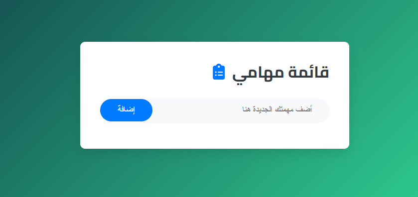
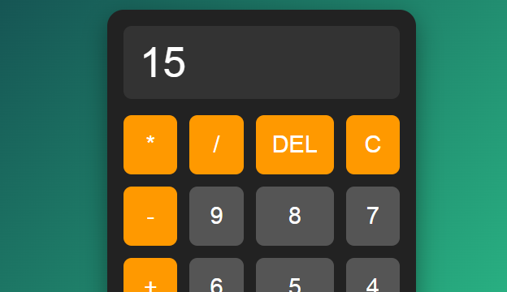
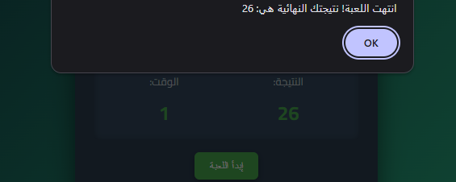

Hi, I'm Omar Mohammad Sha'ban مطور ويب ومختص في تحسين محركات البحث (SEO)
SEO specialist | مطور ويب | front-end development | مطور واجهة أمامية متخصص في دمج حلول الذكاء الاصطناعي
متحمس لتحويل الأفكار إلى واقع رقمي ملموس.
SEO specialist | مطور ويب | front-end development | مطور واجهة أمامية متخصص في دمج حلول الذكاء الاصطناعي
متحمس لتحويل الأفكار إلى واقع رقمي ملموس.
Omar Mohammad Sha'ban
مطور ويب ومختص في تحسين محركات البحث (SEO) من الإسكندرية. أتمتع بشغف
كبير في تصميم وتطوير مواقع الويب التي تجمع بين الجمال والوظائف. أدرس
حالياً في كلية التربية وأسعى لتطوير مهاراتي في مجال تكنولوجيا المعلومات.
أنا مؤمن بقوة الذكاء الاصطناعي في تحويل تجربة المستخدم. قمت بدمج واجهات برمجة تطبيقات الـ AI المتقدمة مثل Google Gemini لإنشاء مساعد افتراضي تفاعلي داخل معرض أعمالي، مما يوضح قدرتي على بناء تجارب ويب ذكية ومبتكرة
نظرة على بعض المشاريع التي قمت بتنفيذها.

صممت صفحة هبوط تفاعلية ومتجاوبة بالكامل لمنتج سماعات رأس وهمي، مع التركيز على تجربة المستخدم وتصميم واجهة جذابة.

طورت تطبيق ويب بسيط وفعال لإدارة المهام اليومية باستخدام HTML، CSS، وJavaScript، مع ميزات لإضافة، حذف، وتحديد المهام كمكتملة.
تطبيق ويب بسيط لإدارة المهام اليومية، يتيح إضافة وحذف وتحديد المهام كمكتملة، مع حفظ البيانات في المتصفح. (تم تحويله لتطبيق سطح مكتب باستخدام Electron.js)

طورت آلة حاسبة متقدمة باستخدام HTML، CSS، وJavaScript، تدعم العمليات الحسابية الأساسية والمتقدمة مع واجهة مستخدم سهلة الاستخدام.

لعبة تفاعلية بسيطة حيث يجب على اللاعب النقر على الخلد الذي يظهر عشوائياً في أماكن مختلفة على الشاشة لكسب النقاط، تم تطويرها باستخدام HTML، CSS، وJavaScript.
سعيد بتواصلك! يمكنك إيجادي هنا: